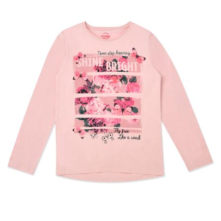

Джемпер Futurino розовый

Стоимость: 499 руб.
Описание товара
Детям от 7 лет до 12 лет
Розовый джемпер Futurino украшен крупным принтом с розами.
Характеристики товара
- Код товара: 2037623001sup
- Артикул: 18AWG79-JJ
- Бренд: Futurino
- Страна-производитель: Китай
- Материал: 100% хлопок
- Габариты упаковки: 30 x 5 х 30 см
- Вес упаковки: 0.08 кг.
Подробное описание товара
- Мягкий дышащий хлопок хорошо пропускает воздух и впитывает влагу
- Круглый вырез с фактурной окантовкой
- Прямой крой
- Высокая износостойкость
Обращаем Ваше внимание, что правильное определение размера детской одежды напрямую зависит от индивидуальных особенностей ребёнка.
© Все права защищены